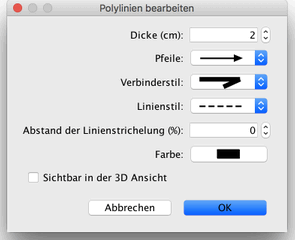

| Polylinien und Kurven bearbeiten | |||
Sie können die Position von Polylinien mit der Maus bearbeiten, nachdem Sie sie im Wohnungsplan ausgewhält haben.
Ist im Wohnungsplan eine Polylinie ausgewählt, können Sie all ihre Punkte mit den Punktmarkierungen, die an jedem Punkt der ausgewählten Polylinie erscheinen bewegen.
Wenn der Mauszeiger sich über einer dieser Markierungen befindet, ändert er seine
Form, um darauf hinzuweisen, dass Sie den Punkt verschieben können.  Im Dialog Polylinien bearbeiten können Sie die Dicke der ausgewählten Polylinie, die Pfeile, die an ihrem Ende gezeichnet werden, den Verbinderstil zwischen Liniensegmenten, den Linienstil sowie die Farbe ändern. Die letzte Option in der Auswahlliste Verbinderstil erlaubt es auch, eine Kurve an Stelle mehrerer Linien zu zeichnen. |

|